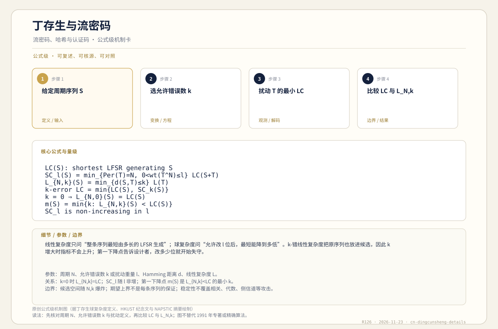

原理与机制
中国密码史：丁存生与流密码（Ding Cunsheng and Stream Ciphers）。### 线性复杂度与稳定性
序列 S 的线性复杂度 LC(S) 是能生成它的最短 LFSR 长度。高 LC 只说明“整条序列难用短 LFSR 生成”，不说明“改几位后仍难”。丁存生等在 1991 年提出球复杂度：SC_l(S)=min_{Per(T)=N, 0<wt(T^N)≤l} LC(S+T)；即在周期相同、重量不超过 l 的扰动 T 下，S+T 的最低线性复杂度。### k-错线性复杂度
等价写法是 L_{N,k}(S)=min_{T∈F^N, d(S,T)≤k} L(T)，其中 d 为 Hamming 距离，L(T) 为 T 的线性复杂度；k-错线性复杂度常写 min{LC(S), SC_k(S)}。第一下降点 m(S)=min{k: L_{N,k}(S)<LC(S)} 是“改多少位才开始降”的阈值。k=0 退化为 LC(S)；k 增大时允许的扰动更多，L_{N,k} 不增。球复杂度与 k-错线性复杂度是同一稳定性思想的不同表述：前者排除零扰动，后者把原序列也纳入候选。

为什么重要
流密码不能只看线性复杂度。攻击者若能改动少量密钥流位（错误、故障、近似序列），高 LC 可能骤降；稳定性指标量化这种下降。丁存生与肖国镇、单炜娟在 1980 年代发展流密码稳定性理论，1991 年出版《The Stability Theory of Stream Ciphers》，提出球复杂度与重量复杂度；k-错线性复杂度后来由 Stamp 与 Martin 独立提出并成为标准指标。
应用与实例
1.先算 LC(S) 与线性复杂度轮廓。2.选定威胁模型中的 k（允许改动的位数或错误数）。3.在 d(S,T)≤k 的候选空间中最小化 L(T)，得到 L_{N,k}；或按球复杂度排除零扰动。4.找第一下降点 m(S)，判断“少量改动是否已经击穿”。5.把 N、k、LC、m(S)、搜索空间大小一起报告；大 k 不要用穷举冒充精确值。6.设计密钥流时，同时要求高 LC、高 k-错线性复杂度、良好相关性与周期。### 不能怎么用
不能把 LC 高就说稳定；不能把 k 设得很大后得到低值就宣布序列不安全；不能把期望上界当最坏情况；不能把稳定性指标当全部安全性。
边界与攻击面
1.k 选择不当：k=0 只测原序列；k 太大时几乎任何序列都能被拉到低复杂度，指标失去区分度。2.穷举成本：候选空间 Σ_{i=0}^k C(N,i) 随 N,k 爆炸；大周期只能算上界或特定结构。3.只给期望：随机序列的期望上界不等于每条序列的保证。4.结构限制：球复杂度对周期、域、扰动重量有假设；非周期或不同域要重定义。5.其他攻击：稳定性不覆盖相关、代数、立方、侧信道或实现故障。6.指标误读：SC_k 非增，不能拿不同 k 的数值直接比较安全性。
历史与背景
丁存生 1980 年代在西安电子科技大学研究流密码，1988 年 EUROCRYPT 论文证明 Massey 提出的多序列移位寄存器综合算法猜想，是较早在该会议发表论文的中国作者之一。1980 年代他与肖国镇、单炜娟发展流密码稳定性理论，1991 年出版《The Stability Theory of Stream Ciphers》，提出球复杂度与重量复杂度；后在香港科技大学任教授。k-错线性复杂度在 1990 年代初由他与 M.Stamp 等相继独立提出，成为序列稳定性标准指标。
逐步示例与核验
事件时间线模型
背景 → 过程 → 结果 → 争议。背景写此前技术/制度；过程写可核参与者与时间；结果写后续标准、机器、课程或政策；争议写二手叙述与一手材料的差距。
参考出处
- Wikipedia search entry for 丁存生与流密码. https://zh.wikipedia.org/w/index.php?search=%E4%B8%81%E5%AD%98%E7%94%9F%E4%B8%8E%E6%B5%81%E5%AF%86%E7%A0%81
- 《密码简史：穿越远古 展望未来》（杨义先、钮心忻，电子工业出版社，2020，ISBN 9787121398711）. https://book.cppinfo.cn/Encyclopedias/home/index?id=3730464